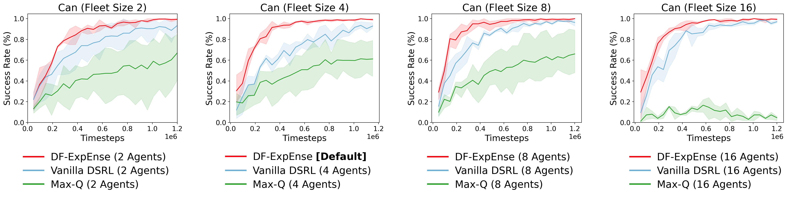

Diffusion policies can learn powerful multimodal decision-making models from offline experience, and strategies have been devised for finetuning them with respect to online experience. But as real-world interactions can be expensive, we look to reduce collection quantity for increased experience quality through exploration, to improve behavior in a sample-efficient way. We focus on three central questions in equipping diffusion policies for principled online exploration:
At each timestep, DF-ExpEnse selects an exploratory action to execute by performing three steps. First, (a) filters the continuous action space by generating multiple samples from the diffusion policy. Then, (b) estimates exploration interest in each action with respect to quality and uncertainty using an ensemble. Lastly, (c) normalizes exploration interest across the fleet and selects the action with the maximum interest to execute.
DF-ExpEnse is a general exploration technique, and can be seamlessly integrated with existing strategies that finetune pretrained diffusion policies via reinforcement learning to provide sample-efficiency benefits. We integrate DF-ExpEnse with input noise and residual finetuning, and evaluate on a variety of manipulation and locomotion tasks across Robomimic, Gym, and DexMimicGen.
Intuitively, larger fleets may provide greater amounts of normalization and collaboration possibilities. We find that performance does decrease below a fleet size of 4, verifying that DF-ExpEnse can leverage larger fleet sizes to help improve sample efficiency. Nevertheless, DF-ExpEnse still reliably outperforms vanilla DSRL and Max-Q across all fleet sizes, large and small.
These findings further reinforce DF-ExpEnse as a robust method that can be integrated with standard reinforcement learning finetuning techniques to provide consistent sample efficiency benefits across a variety of available resource settings.

@inproceedings{
luo2026dfexpense,
title={{DF}-ExpEnse: Diffusion Filtered Exploration for Sample Efficient Finetuning},
author={Calvin Luo and Chen Sun and Shuran Song},
booktitle={Forty-third International Conference on Machine Learning},
year={2026}
}